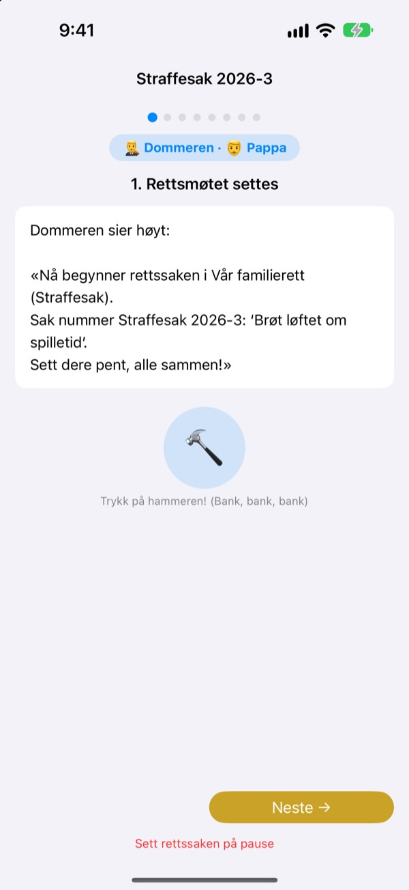
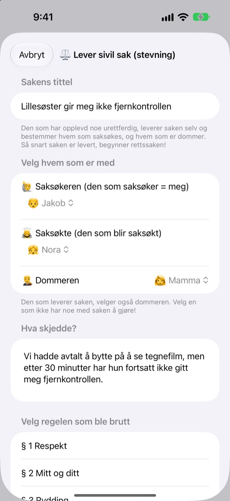
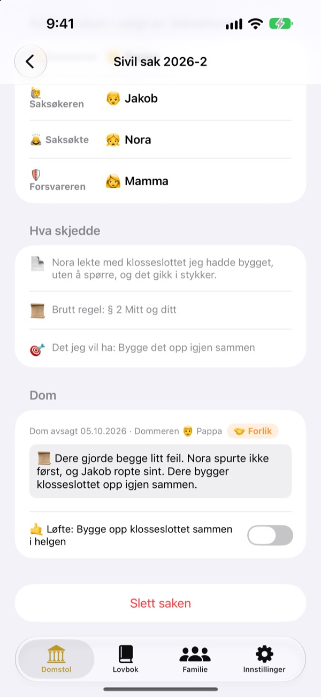
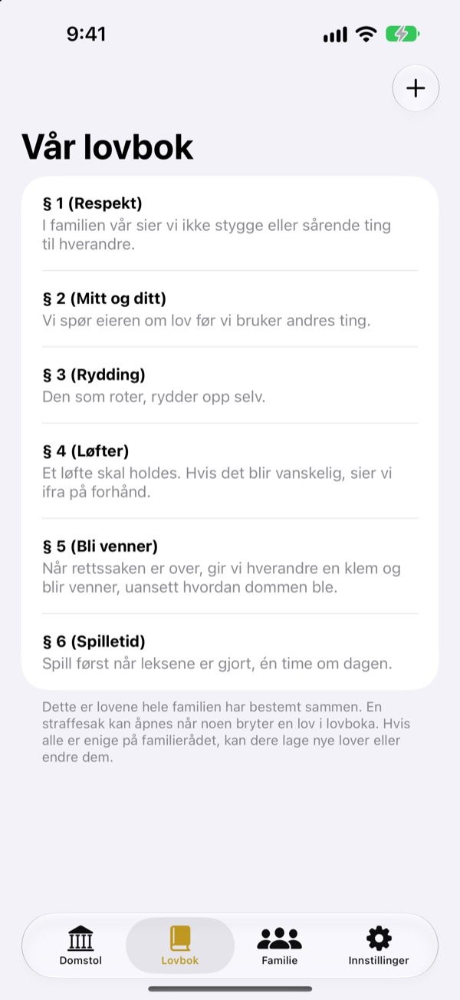

Urettferdig?
Ingen tårer, ta det i retten.
Barnet ditt leverer selv stevningen som saksøker, og familien fordeler rollene som dommer og forsvarer. Et manus forteller ved hvert trinn hvem sin tur det er og hva som skal sies, så selv den første saken går som en ekte.
Ingen reklame, ingen kjøp, ingen registrering. Alt blir på denne enheten.

Hold en rettssak
En kort sak: «Lillebroren min vil ikke gi meg fjernkontrollen.» Bytt ordnivå øverst, slå med klubba og start tidtakeren. Det kommer lyd, så sjekk volumet.
«Han begynte!» Lei av alltid å være dommer?
Når det smeller, er det som regel en voksen som avgjør. Den som taper, gråter fordi det føles urettferdig, og den som vinner, vet ikke helt hvorfor. Familieretten gir barna en rekkefølge: fortell hele din side, og hør den andre siden helt ut. Og dommen ender med et løfte, ikke bare en straff.
Den som føler seg urettferdig behandlet, saksøker selv
Den som synes noe er urettferdig, blir saksøker og leverer stevningen. Hvem saken gjelder og hvem som blir dommer, velger den som saksøker. Barn kan til og med saksøke mamma og pappa.
Så du noen bryte en husregel? Bli aktor og reis en straffesak. Bare den som verken er saksøker eller saksøkt, kan være dommer.

Dommer ender med et løfte
Med dommen følger et løfte eller en straff, som dere krysser av når den er gjort. Avsluttede saker blir deres egne presedenser.
Forslagene til straff starter med å gjøre det godt igjen og lege følelser, mer reparasjon enn straff. Mindre spill eller TV kommer sist.

Deres hus, deres lover
Skriv reglene dere er enige om som paragrafer, som respekt, rydding og å holde løfter, og legg til eller endre når som helst. I stevningen velger dere loven som ble brutt.
«Lær om retten» forklarer hva dommere, saksøkere, aktorer og forsvarere gjør, og hvordan en rettssak går for seg.

I gang på tre trinn
- 1
Legg til familien
Et navn og en emoji holder. Ingen konto.
- 2
Lever en sak
Urettferdig? Sivil sak. Husregel brutt? Straffesak. Velg så en dommer.
- 3
Sett retten
Følg manuset, hold tiden med tidtakeren og avsi dommen med klubba.
Ord som vokser med barnet
- Dommeren
- Enkelt: Bestemmeren · Rettssal: Rettens leder
- Saksøkeren
- Enkelt: Den som synes det er urettferdig · Rettssal: Saksøkeren
- Saksøkte
- Enkelt: Den som skal svare · Rettssal: Saksøkte
- Aktor
- Enkelt: Den som sa ifra · Rettssal: Aktor
- Tiltalte
- Enkelt: Den som skal svare · Rettssal: Tiltalte
- Forsvareren
- Enkelt: Hjelperen · Rettssal: Forsvareren
- Sivil sak
- Enkelt: Urettferdig! · Rettssal: Sivil sak
- Straffesak
- Enkelt: Brutt løfte · Rettssal: Straffesak
Velg ordnivå i Innstillinger, så endres ordene på skjermen og i manuset samtidig. Prøv Enkelt for barnehagebarn og Standard for skolebarn.
Spørsmål og svar
Hvilken alder passer det for?
Alle barn som kan lese, kan være med sammen med en forelder. Med manuset, veiledningen og ordnivået Enkelt kan også yngre barn delta når en voksen leser høyt.
Er det virkelig gratis?
Ja. Ingen reklame og ingen kjøp som låser opp funksjoner. I Innstillinger kan du gi et frivillig tips til utvikleren, men det låser verken opp eller igjen noe.
Trenger den internett?
Nei. Rettssaker og arkiv fungerer helt uten nett. Bare for å sende tilbakemelding fra Innstillinger trenger du internett og iCloud-pålogging.
Hvor lagres opplysningene?
Familie, lover, rettssaker og dommer lagres bare på enheten og sendes ikke til noen server. Utvikleren får bare tilbakemelding du selv sender, og anonym bruksstatistikk som ikke kan spores til deg.
Kan jeg ta sikkerhetskopi eller flytte til en annen enhet?
Bruk «Lagre arkiv» i Innstillinger for å eksportere alt til en fil, og «Hent arkiv» på den andre enheten, så er alt der igjen akkurat som før. Kopier fra den gamle nettversjonen kan også hentes.
Fungerer det på iPad?
Ja, på både iPhone og iPad. En stor skjerm er perfekt når hele familien sitter rundt.
Hva om straffene blir for strenge?
Når aktor ber om en straff, minner manuset om at den ikke skal være for streng, men mulig å gjennomføre. Forslagene starter med å reparere: gjøre det godt igjen, lege følelser og se det fra den andres side.
Hvordan sletter jeg alt?
Sletter du appen, forsvinner alle sakene på enheten. Ingenting har forlatt den, så ingenting ligger igjen noe annet sted. Vil du ha slettet tilbakemelding du har sendt, kan du skrive til oss.
Feil, ideer eller noe annet? Skriv til leeo@kakao.com. Du kan også sende tilbakemelding fra innstillingene i appen.